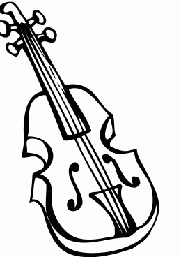

Welcome to Cugundur
beetroot | İngilizce-Türkçe Sözlük - Cambridge Dictionary
2021.03.21 09:58Cambridge Dictionary Plus Profilim +Plus Yardım Oturumu kapat Sözlük Tanımlar Clear explanations of natural written and spoken English İngilizce Yabancılar İçin Sözlük Temel İngiliz İngilizcesi Temel Amerikan İngilizcesi Çeviriler Çeviri yönünü değiştirmek için oklara tıklayın. Çiftdilli Sözlükler İngilizce–Fransızca Fransızca–İngilizce İngilizce–Almanca Almanca–İngilizce İngilizce–Endonezce Endonezce–İngilizce İngilizce–İtalyanca İtalyanca–İngilizce İngilizce–Japonca Japonca–İngilizce İngilizce–Lehçe Lehçe–İngilizce İngilizce–Portekizce Portekizce–İngilizce İngilizce–İspanyolca İspanyolca–İngilizce Yarı Çiftdilli Sözlükler Hollandaca–İngilizce İngilizce–Arapça İngilizce–Katalanca İngilizce–Çince (Basitleştirilmiş) İngilizce–Çince (Geleneksel) İngilizce–Çekçe İngilizce–Danca İngilizce–Korece İngilizce–Malayca İngilizce–Norveççe İngilizce–Rusça İngilizce–Tayca İngilizce–Türkçe İngilizce–Vietnamca Çevir Dilbilgisi Thesaurus Cambridge Dictionary Plus {{userName}} Cambridge Dictionary Plus Profilim +Plus Yardım Oturumu kapat Oturum açın / Üye olun Türkçe Change English (UK) English (US) Español Español (Latinoamérica) Português 中文 (简体) 正體中文 (繁體) Türkçe Bizi takip edin Bir sözlük seçin Yeni ve Önerilen {{#preferredDictionaries}} {{name}} {{/preferredDictionaries}} Definitions Clear explanations of natural written and spoken English İngilizce Yabancılar İçin Sözlük Temel İngiliz İngilizcesi Temel Amerikan İngilizcesi Grammar and thesaurus Usage explanations of natural written and spoken English Dilbilgisi Thesaurus Çeviri Çeviri yönünü değiştirmek için oklara tıklayın. İki Dilli Sözlükler İngilizce–Fransızca Fransızca–İngilizce İngilizce–Almanca Almanca–İngilizce İngilizce–Endonezce Endonezce–İngilizce İngilizce–İtalyanca İtalyanca–İngilizce İngilizce–Japonca Japonca–İngilizce İngilizce–Lehçe Lehçe–İngilizce İngilizce–Portekizce Portekizce–İngilizce İngilizce–İspanyolca İspanyolca–İngilizce Yarı İki Dilli Sözlükler Hollandaca–İngilizce İngilizce–Arapça İngilizce–Katalanca İngilizce–Çince (Basitleştirilmiş) İngilizce–Çince (Geleneksel) İngilizce–Çekçe İngilizce–Danca İngilizce–Korece İngilizce–Malayca İngilizce–Norveççe İngilizce–Rusça İngilizce–Tayca İngilizce–Türkçe İngilizce–Vietnamca Sözlük Plus Sözcük Listeleri Dilinizi seçin Türkçe English (UK) English (US) Español Español (Latinoamérica) Português 中文 (简体) 正體中文 (繁體) İçindekiler Noun Translations Gramer Bütün çeviriler Sözcük listelerim
Aşağıdaki listelerinizden birine beetroot 'ı ekleyin ya da yeni bir tane yaratın.
Daha fazlası {{name}} Yarattığınız sözcük listelerine gidin Bu örnek cümle ile ilgili yorumunuzu yazınız: Cambridge Dictionary Plus Profilim +Plus Yardım Oturumu kapat {{userName}} Cambridge Dictionary Plus Profilim +Plus Yardım Oturumu kapat Oturum açın / Üye olun Türkçe Ara Ara Sözlük Çevir Dilbilgisi Thesaurus +Plus Cambridge Dictionary Plusİngilizce-Türkçe sözlükte beetroot 'ın çevirisi
beetroot noun [ C , U ] UK ukYour browser doesn't support HTML5 audio
/ ˈbiːtruːt / ( US beet ) a round, dark red vegetable that grows in the ground and is usually cooked and eaten cold pancar( Cambridge Yabancılar İçin Sözlük İngilizce-Türkçe 'den beetroot in çevirisi © Cambridge University Press)
beetroot in çevirisi
Rusça Çince (Geleneksel) Japonca Fransızca Katalanca Arapça Çekçe Danca Endonezce Tayca Vietnamca Lehçe Malayca Almanca Norveççe Korece Portekizce Çince (Basitleştirilmiş) İtalyanca Rusça İspanyolca 甜菜根… Daha fazlası için ビートルート, ビーツ, ビート… Daha fazlası için betterave… Daha fazlası için remolatxa… Daha fazlası için شَمَنْدَر… Daha fazlası için červená řepa… Daha fazlası için rødbede… Daha fazlası için tanaman bit… Daha fazlası için บีตรูต… Daha fazlası için củ dền… Daha fazlası için burak, buraki… Daha fazlası için akar bit… Daha fazlası için die Rote Bete… Daha fazlası için rødbete… Daha fazlası için 비트루트(검붉은 채소를 익힌 후 차게 해서 먹음)… Daha fazlası için beterraba… Daha fazlası için 甜菜根… Daha fazlası için barbabietola… Daha fazlası için свекла… Daha fazlası için remolacha… Daha fazlası için Çevirmene mi ihtiyacınız var?Hızlı ve ücretsiz çeviri alın!
Çevirmen aracıGöz at
beeper noun beer noun beet noun beetle noun beetroot noun befall verb befit verb before adverb before conjunctionSözcük dağarcığınızı eğlenceli görsel quiz'lerimizle sınayın
{{randomImageQuizHook.copyright1}} {{randomImageQuizHook.copyright2}} Görsel telif bilgisi Şimdi bir quiz'e girmeyi deneyinbeetroot için Türkçe daha fazla çeviri
Tümü beetroot , at beet noun Tüm anlamalara bakınGünün Kelimesi
be full of the joys of spring
to be very happy
HakkındaBlog
I feel like my life’s on hold: Language for describing uncertain times.
March 17, 2021 Daha Fazla OkuYeni Kelimeler
computer doping March 15, 2021 Daha fazla yeni kelime list "e eklendi En üste git İçindekiler Çeviriler Ücretsiz parçacıklarımızı edinin Ücretsiz arama kutusu aracımızı kullanarak Cambridge Dictionary'nin gücünü web sitenize ekleyin. Sözlük uygulamaları Sözlük uygulamalarımıza hemen göz atın ve bir daha asla şaşırmadığınızdan emin olun.© Cambridge University Press 2021
Öğren Öğren Öğren Yeni Kelimeler Yardım Basılı Geliştirme Geliştirme Geliştirme Sözlük API Çift Tıklamalı Arama Arama Araçları Lisans Verileri Hakkında Hakkında Hakkında Erişilebilirlik Cambridge English Cambridge University Press Onay Yönetimi Çerezler ve Gizlilik Kitaplık Kullanım Koşulları© Cambridge University Press 2021
{{#displayLoginPopup}} Cambridge Dictionary +PlusLearn more with Plus
Sign up for free and get access to exclusive content: Free word lists and quizzes from Cambridge Tools to create your own word lists and quizzes Word lists shared by our community of dictionary fans Şimdi üye olun ya da Oturum açın Cambridge Dictionary +PlusLearn more with Plus
Create word lists and quizzes for free Şimdi üye olun ya da Oturum açın {{/displayLoginPopup}} {{#notifications}} {{{message}}} {{#secondaryButtonUrl}} {{{secondaryButtonLabel}}} {{/secondaryButtonUrl}} {{#dismissable}} {{{closeMessage}}} {{/dismissable}} {{/notifications}}